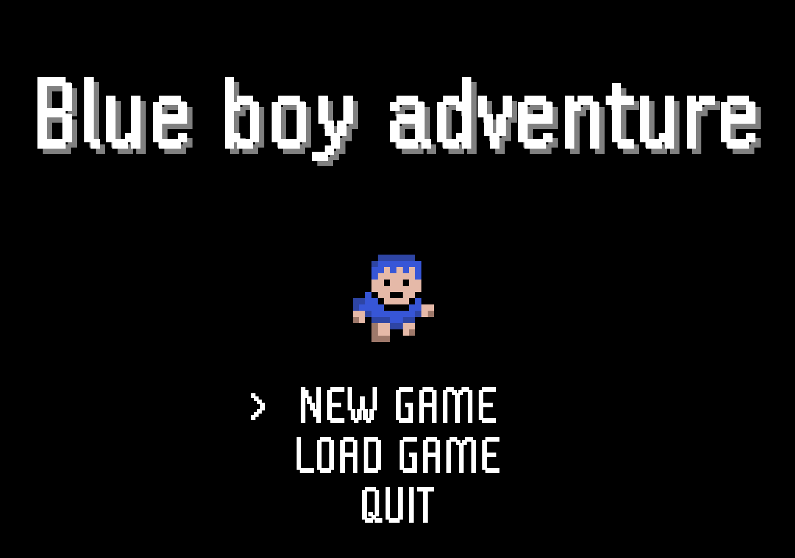

Sobre mí
Actual estudiante de 2n de DAM con fuerte voluntad de trabajo,abierto al aprendzaje de cualquier lenguaje, framework o tecnologia que se me presente
busco oportunidades para expandir mis habilidades como programador. Poseo experiencia previa en el sector de la hostelería, zelador y mecánico.
Esfuerzo máximo para adaptarme rápidamente y enfrentar los problemas con determinación.
Además de mi compromiso con el trabajo, también realizo actividades deportivas frecuentemente. Durante varios
años he estado federado en remo y actualmente en espeleología, lo que demuestra mi dedicación y disciplina.
Skills
- Programación: Java, Python, Swift, JavaScript, html
Experienciado principalmente en java, he trabajado en diversos lenguajes de programacion, aqui incluyo los mas detacados entre ellos.
- Bases de datos: MySQL, MongoDB
- Herramientas de Diseño: Figma, xd
Conocedor del uso y creacion de mockups e wireframes mediante xd y figma
- Frameworks: React, Node.js
- Project Management: Agile, Scrum
Conocedor de la gestion de proyectos mediante estas metodologias. Tambien poseo conocimientos en Git
Experiencia
- Practicas de Programador - BONDY
Población: Barcelona | País: España (29/011/2024 - ACTUAL)
-Automatizacion de Test
-Resolucion de bugs
-Programador full stack
- Mécanico electricista - HIFE
Población: Alcañiz | País: España (04/07/2024 - 02/08/2024)
-instalación de pantallas
-instalación de maquinas validadoras
-instalación de altavoces interiores y exteriores
-instalación de micrófonos
-instalación de botones
-instalación de cableado - Zelador - ICS CUAP del Temple
Población: Tortosa | País: España
Funcion de zelador en periodo de guardia en caso de falta de algún administrador. - Camarero - Villaretiro
Población: Tortosa | País: España (01/06/2023 - 15/07/2024)
Trabajo eventual en bodas y celebraciones
Educación y Formación
- Ciclo superior en desarrollo de aplicaciones multiplataforma Escola del treball (14/09/2023 – Actual)
- Baxillerato Col·legi Sagrada Família (12/09/2020 – 20/06/2022)
- ESO Col·legi Sagrada Família (12/09/2016 – 20/06/2020)
Mis proyectos
- RLS 2D Game Adventure


Juego en 2d solo con Java, sin usar librerias. Es un proyecto seguido de varios tutoriales los cuales me enseñaron el diseño, optimizacion y realizacion de este tipo de juegos.
- Sistema de Gestión de Hotel

Trabajo donde integro controladores JDBC, con una base de datos en local MySql. Front hecho en jsp, y back en java.
Contacto
Email: angelsola2004@gmail.com
Phone: +34 674-933-160